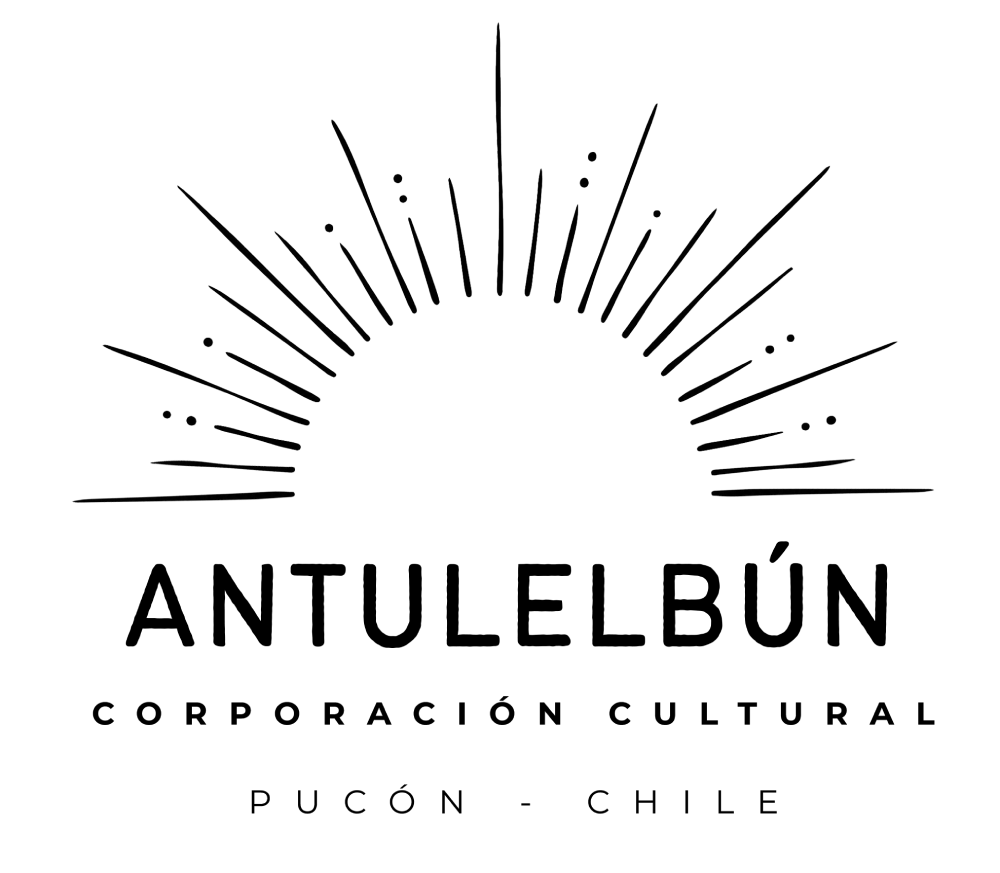

import React from 'react';

export default function App() {
  return (
    <div className="app">
      {/* Header */}
      <header className="bg-[#e8f8c1] text-white py-4 text-center">
        <h1 className="text-2xl m-0">Corporación Cultural Antulelbún</h1>
        
      </header>

      {/* Navigation */}
      <nav className="bg-[#eee5bf] py-2.5 text-center flex flex-wrap justify-center">
        <a href="index.html" className="text-black no-underline px-3 py-2 mx-1 my-1 text-lg font-bold transition-colors hover:bg-[#e8f8c1] rounded">Inicio</a>
        <a href="quienes-somos.html" className="text-black no-underline px-3 py-2 mx-1 my-1 text-lg font-bold transition-colors hover:bg-[#e8f8c1] rounded">Quiénes Somos</a>
        <a href="lineas-de-trabajo.html" className="text-black no-underline px-3 py-2 mx-1 my-1 text-lg font-bold transition-colors hover:bg-[#e8f8c1] rounded">Líneas de Trabajo</a>
        <a href="proyectos-en-ejecucion.html" className="text-black no-underline px-3 py-2 mx-1 my-1 text-lg font-bold transition-colors hover:bg-[#e8f8c1] rounded">Proyectos en Ejecución</a>
        <a href="proyectos-futuros.html" className="text-black no-underline px-3 py-2 mx-1 my-1 text-lg font-bold transition-colors hover:bg-[#e8f8c1] rounded">Proyectos Futuros</a>
        <a href="noticias.html" className="text-black no-underline px-3 py-2 mx-1 my-1 text-lg font-bold transition-colors hover:bg-[#e8f8c1] rounded">Prensa</a>
      </nav>

      {/* Hero Section */}
      <section className="hero-section relative w-full overflow-hidden mb-5">
        
        <div className="hero-slogan absolute top-1/2 left-1/2 transform -translate-x-1/2 -translate-y-1/2 
          text-white bg-black bg-opacity-60 p-7.5 rounded-lg text-3xl font-bold text-center w-4/5 max-w-[700px]"
        >
          Promoviendo la cultura y las artes en el territorio lacustre andino
        </div>
      </section>

      {/* Main Content */}
      <main className="main-content-centered max-w-[900px] mx-auto p-5">
        {/* Welcome Section */}
        <section className="welcome-section bg-white border border-gray-300 rounded-lg p-6 mb-7.5 shadow-sm text-center">
          <p className="text-gray-700 mb-2.5">
            <strong className="text-xl text-gray-800">Bienvenidos a la Corporación Cultural Antulelbún.</strong>
          </p>
          <p className="text-gray-700 mb-0 text-lg">
            Somos una ONG sin fines de lucro fundada en 2023 por la poeta Norka Sepúlveda, dedicada al fomento y desarrollo de la cultura y las artes.
          </p>
        </section>

        {/* News Section */}
        <section id="noticias">
          <h2 className="text-2xl text-black font-bold text-center mt-0 mb-6">Noticias</h2>
          
          {/* First News Article */}
          <div className="noticia bg-white border border-gray-300 rounded-lg p-6 mb-7.5 shadow-sm">
            
            <h3 className="text-xl text-gray-800 text-left mt-0 mb-4 font-normal">
              Pucón se prepara para una inmersiva Ruta Turística Teatralizada en el Día del Patrimonio 2025
            </h3>
            <p className="text-gray-700 mb-4 leading-relaxed text-justify">
              En un esfuerzo por rescatar y difundir la historia local, la Corporación Cultural Antulelbún, en colaboración con la Municipalidad de Pucón y la Universidad de La Frontera, Campus Pucón, está organizando una experiencia inédita para el Día del Patrimonio 2025: una Ruta Turística Teatralizada titulada "Un paseo por la memoria de Pucón".
            </p>
            <p className="text-gray-700 mb-4 leading-relaxed text-justify">
              El evento, previsto para domingo 25 de mayo a las 11:00 horas, ofrecerá un recorrido guiado por nueve puntos emblemáticos de la ciudad, con actuaciones que darán vida a simpáticos personajes de inicios de la fundación de la comuna para relatar pasajes contenidos en Los Archivos de la Memoria: La Historia No Contada de Pucón, obra de Carlos Gray A.
            </p>
            <p className="text-gray-700 mb-0 leading-relaxed text-justify">
              Esta iniciativa no solo busca acercar la comunidad y visitantes al pasado de Pucón, sino que también promueve el acceso gratuito al conocimiento histórico y la participación activa en la conservación de la identidad cultural. Para ello, el evento contará con herramientas digitales como un código QR que permitirá acceder a un mapa interactivo con fotografías antiguas de los lugares visitados.
            </p>
          </div>
          
          {/* Second News Article with Form Button */}
          <div className="noticia bg-white border border-gray-300 rounded-lg p-6 mb-7.5 shadow-sm">
            <h3 className="text-xl text-gray-800 text-left mt-0 mb-4 font-bold">
              Convocatoria abierta para el Mapeo Cultural de Pucón y Curarrehue
            </h3>
            <p className="text-gray-700 mb-4 leading-relaxed text-justify">
              La Corporación Cultural Antulelbún invita a todos los agentes culturales de <strong>Pucón y Curarrehue</strong> a participar en el <strong>proceso de mapeo cultural</strong>, una iniciativa diseñada para <strong>conectar a quienes comparten una identidad territorial y fortalecer espacios de vínculo en el futuro.</strong>
            </p>
            <p className="text-gray-700 mb-0 leading-relaxed text-justify">
              Este registro busca identificar y visibilizar a artistas, gestores y emprendimientos culturales de ambas comunas, con el propósito de generar redes colaborativas que impulsen el desarrollo del sector. La información recopilada permitirá estructurar futuras instancias de intercambio, capacitación y comercialización, alineadas con estrategias municipales y regionales.
            </p>
            
            {/* Form Link Container */}
            <div className="formulario-link-container text-center mt-5">
              <p className="mb-3">Completa el formulario de inscripción aquí:</p>
              <a 
                href="https://forms.gle/tfdB4XvcTGo8WMPT9"  
                target="_blank" 
                className="inline-block bg-[#e8f8c1] text-gray-800 px-6 py-3 rounded font-bold no-underline transition-colors hover:bg-[#d4e8ac]"
              >
                Acceder al Formulario
              </a>
            </div>
          </div>
        </section>
      </main>

      {/* Footer */}
      <footer className="bg-gray-100 text-gray-800 text-center pt-5 pb-5 mt-7.5">
        <p>Contacto: <a href="mailto:corporacionantulelbun@gmail.com" className="text-gray-800 font-bold no-underline hover:underline">corporacionantulelbun@gmail.com</a></p>
        <p className="mt-2">Síguenos: 
          <a href="https://www.instagram.com/antulelbun.cultura/"  target="_blank" className="text-gray-800 font-bold no-underline hover:underline">Instagram</a> | 
          <a href="https://www.facebook.com/profile.php?id=61557589215809" target="_blank" className="text-gray-800 font-bold no-underline hover:underline">Facebook</a>
        </p>
      </footer>
    </div>
  );
}
